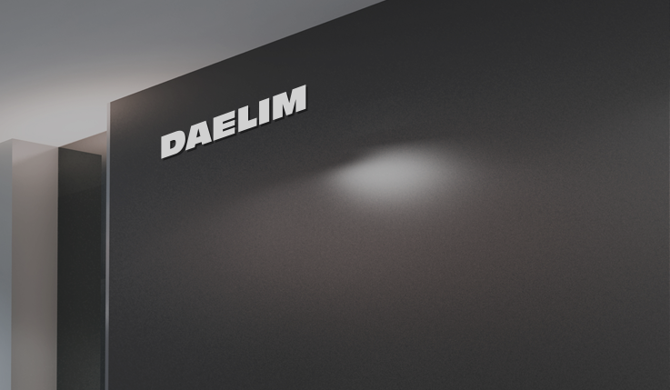

대림 계열사 홈페이지 운영 및 UI 개선
운영 안정 · 이슈 대응 · 유지보수 효율
운영 이슈 대응, 공통 스타일 정리, 재발 방지 중심으로 품질을 안정화.
상세 보기 →Web Publisher · 4y 5m
에이전시/자체 서비스 환경에서
반응형 웹 구축·리뉴얼·운영/유지보수를 수행해왔습니다.
SCSS 구조화와 공통 UI 정리로 유지보수 효율을 높이고,
협업 기반으로 이슈를 빠르게 해결합니다.
대표 이미지 기반의 카드가 좌우로 스와이프(스크롤)됩니다.
“할 줄 안다”가 아닌, “어떻게 써서 무엇을 만들었는지” 정리했습니다.
🧩 구조화 | 📱 반응형 | 🤝 협업 | 🛠 운영
약 4년 이상의 실무 경험을 통해 서비스 운영 환경에서의 웹 퍼블리싱을 경험해왔습니다.
디자인 구현에 그치지 않고, 반복 작업을 줄이는 구조와
개발자 협업을 고려한 마크업을 중요하게 생각합니다.
SCSS 구조화, 공통 컴포넌트 분리, 반응형 대응을 하며,
기획·디자인·개발 사이에서 발생하는 문제를
퍼블리싱 관점에서 정리하고 해결하는 역할을 해왔습니다.
Email & GitHub